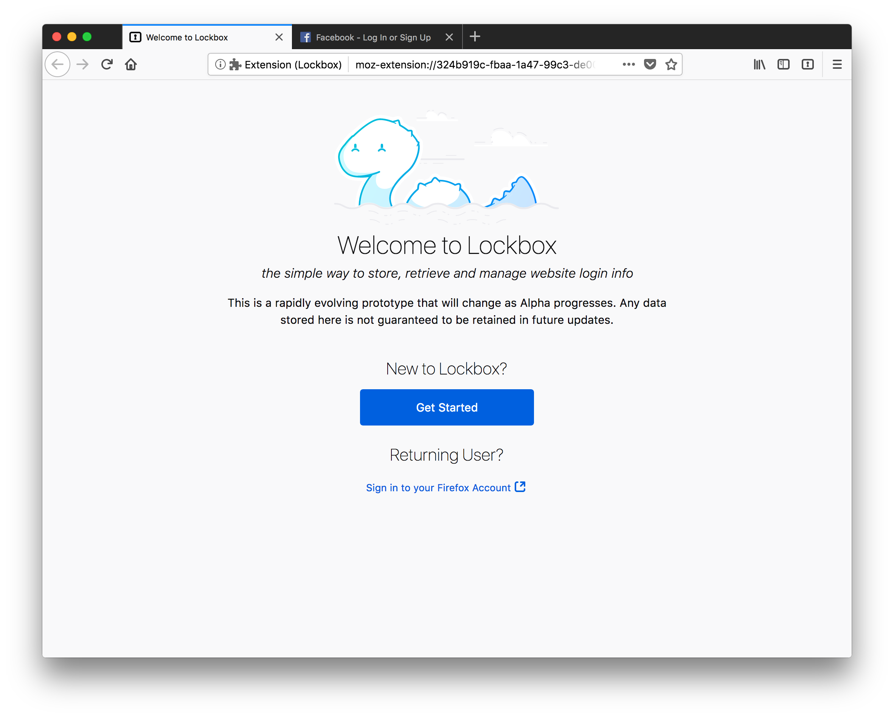
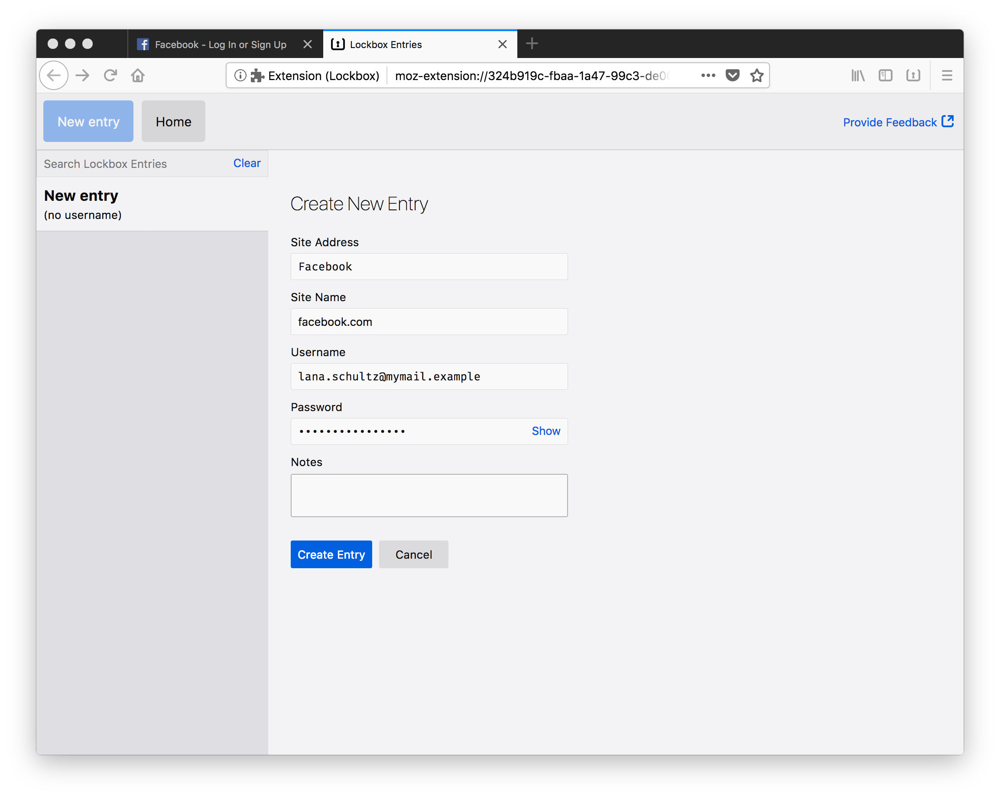
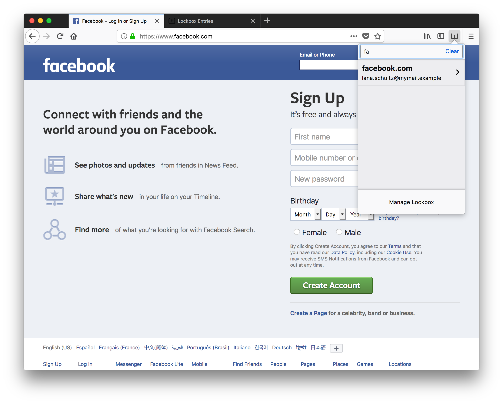
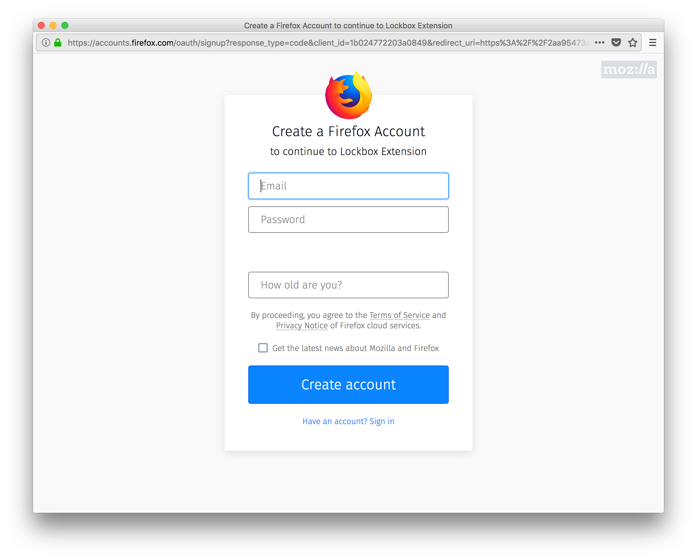

Lockbox for desktop
Install the extension
Install Lockbox Have questions about how Lockbox works? Check out the FAQs
The Lockbox extension is a simple, stand-alone password manager that works with Firefox for desktop. It’s the first of several planned experiments designed to help us test and improve password management and online security.
Install it and sign in with your Firefox Account to encrypt your data with tamper-resistant block cipher technology. Then share feedback here.
Get Started
-
Install Lockbox, and it will automatically disable Firefox’s password manager. 
-
Create an entry with a website name, URL, username, and password. 
-
Search or browse in the toolbar menu or on the full tab to find the password you need. 
-
Sign up or sign in with a Firefox Account to encrypt your entries. 
This is just one component of the Lockbox product. Please see the Lockbox website for more documentation and context.